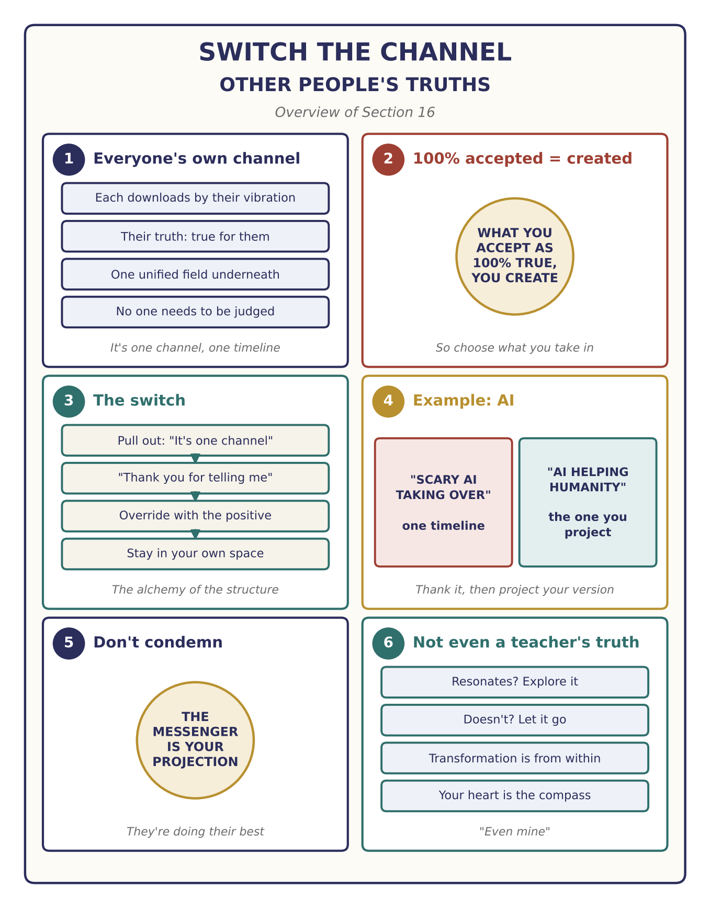
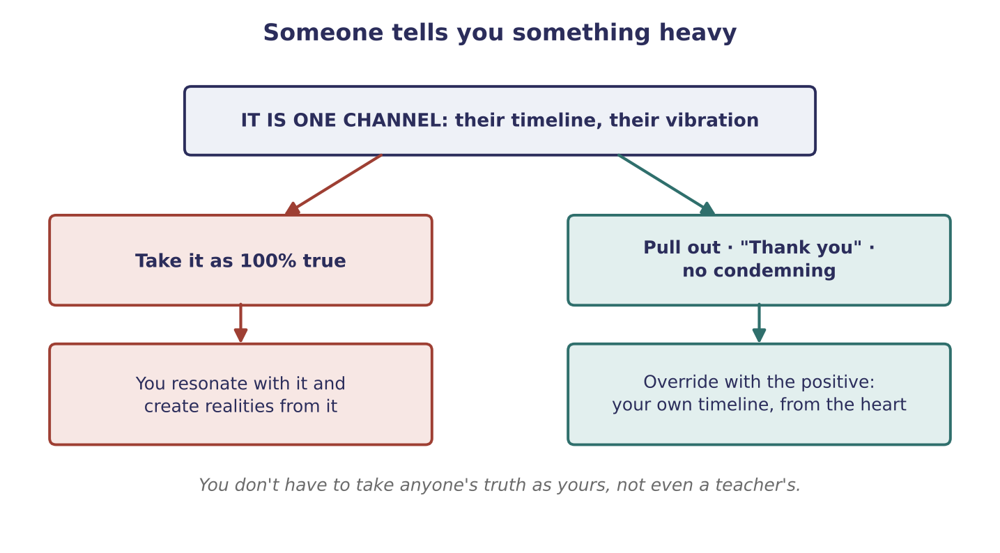

Transform Negative To Positive
What to do with information that feels heavy or lower, from teachers, channels, the news or anyone else (single-question video)

Key teachings
16.1Everyone's truth comes from their own channel
Question: some people share what seems like valid information, but the general tone of their frequency is lower. If we want to keep our frequency positive, what do you recommend?
The answer starts with humility: it can only teach what it was taught, and it doesn't comment on other people's work. Everyone is doing their best from their own point of view, and every person is creating their own ascension (see 5.6).
Here is why there are so many different "truths": each person downloads information from the quantum field according to their own vibration. Realities run at different frequencies, and you reach the ones you match (see 15.2). So everyone's truth is true from their point of view and understanding, while the quantum structure itself is one unified field. What someone shows you is simply another channel: another timeline, another location in the field, like latitude and altitude (see 5.8).
16.2What you accept as 100% true, you create from
It doesn't matter so much what someone tells you; what matters is how you take it. The moment you accept information as 100% true, you take its vibrational sequence into your own hologram, you start resonating with it, and you begin creating and fluctuating realities based on it (see 1.5, 2.5).
So you don't have to take anyone's truth as yours, "even mine", if it doesn't resonate with you. If it does resonate, you are welcome to dig in. Either way, transformation comes from within, not from what someone else tells you (see 3.6).
16.3Neutralize, thank, and switch the channel
Any negative input can be neutralized, understood and transformed into something positive; that is why the teachings on fluctuating realities and neutralizing with gratitude matter (see Sections 2 and 3). Once you understand this alchemy, you can take what someone downloaded from their timeline and create your own timeline that has nothing to do with its negativity.
The example given: everyone is talking about frightening AI taking over. That is one specific timeline. Understand it, neutralize it, and project the positive instead: "Thank you, AI, for existing, because I know that in the good fifth-dimensional structure you are doing incredible things, working with humanity" (see 8.1).
Think of it as television. You don't have to ignore what someone says, and you don't have to argue with them or try to run their reality. Say, "Thank you for telling me this," and switch to another channel. How? With the same quantum manifestation protocol as always: pull out, give gratitude, and override it with something positive. Then stay in your own space and project from your heart, to create a fifth-dimensional timeline.

16.4Don't condemn the messenger
Don't go after the person, and don't simply believe everything either. Give them gratitude, because they are doing their best from their belief system. And there is a deeper reason not to condemn them: that person is a projection of your own consciousness (see 1.1). You cannot condemn them without condemning your own self, your own vibration, your own hologram. You are consciousness itself.
The method — Switch the Channel
Use it whenever you hear something heavy, from a teacher, a video, the news or a friend:
- Notice the pull. Am I starting to take this as 100% true? Is it pulling my emotion down?
- Pull out. "This is one channel, one timeline. It doesn't have to be my platform."
- Neutralize with thanks. "Thank you for telling me this." No arguing, no condemning.
- Check resonance. Does it resonate with my heart? If yes, explore it. If not, let it go.
- Override with the positive. Project the version you choose ("AI is helping humanity").
- Stay in your own space and keep projecting from the heart.